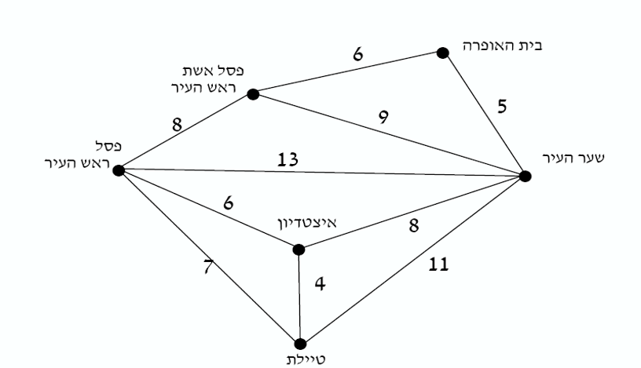

מגמת מדעי המחשב
מבואות עירון
מורה: גיתית
תארו לעצמכם סוכן שצריך לבקר במספר נקודות בעיר, בדיוק פעם אחת בכל נקודה, ולחזור להתחלה במסלול הקצר ביותר.

כדי למצוא את המסלול המיטבי, המחשב יצטרך לבדוק את כל האפשרויות הקיימות. ככל שנוסיף נקודות למפה, כמות המסלולים האפשריים הולכת וגדלה בקצב מסחרר.
הנה טבלה המראה כמה זמן ייקח למחשב (המבצע מיליארד פעולות בשנייה) לחשב את כל המסלולים בהתאם לכמות האטרקציות:
| מספר האטרקציות | מספר המסלולים לבדיקה | זמן חישוב משוער |
|---|---|---|
| 5 | 120 | שבריר שנייה |
| 10 | 3,628,800 | 0.003 שניות |
| 15 | 1,307,674,368,000 | כ-21 דקות |
| 20 | 2,432,902,008,176,640,000 | כ-77 שנים! |
המסקנה: לא מספיק לכתוב קוד שעובד. אנו חייבים להעריך כמה זמן ייקח לו לרוץ.
אפשר לספור במדויק כמה פעולות המחשב מבצע כתלות בגודל הקלט (n):
לפעמים זמן הריצה תלוי לא רק בגודל הקלט (n), אלא גם בתוכן שלו. נתבונן בפעולת חיפוש איבר במערך:
כפי שראינו, פונקציית זמן הריצה המדויקת (למשל 3n + 5) היא מפורטת מדי. בפועל, אנו מעוניינים רק בסדר הגודל של הפונקציה כש-n שואף לאינסוף.
O( complexity )
3n + 5 פעולות, נתעלם מה-5 ומהכופל 3, ונגיד שהסיבוכיות היא פשוט (n)O.5n² + 2n + 10, החזקה הגבוהה ביותר קובעת, ולכן הסיבוכיות תהיה (O(n².CountVal.אנו מאפיינים אלגוריתמים לפי קצב הגידול של הזמן שלהם ביחס לקלט:
כאשר נשאלים מהי סיבוכיות זמן הריצה, חובה לענות לפי 3 שלבים ברורים במדויק:
מהי סיבוכיות זמן הריצה של הפעולה הבאה?
מהי סיבוכיות זמן הריצה של הפעולה הבאה?
מהי סיבוכיות זמן הריצה של הפעולה הבאה?
מהי סיבוכיות זמן הריצה של הפעולה הבאה?
מהי סיבוכיות זמן הריצה של הפעולה הבאה?